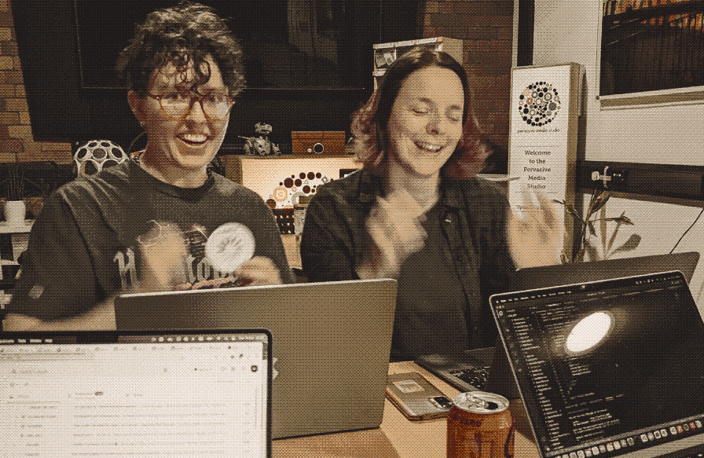

a meetup for queers that work in tech
every third Tuesday of the month, 6-8pm at the Watershed
interested in joining? read our code of conduct
Upcoming events
-
Saturday 2nd August, 12 - 2pm
Celebrate International HTML Day with us! We're going to be meeting in central Bristol to write and learn about HTML
Past events
-
Tuesday 21st January, 6 - 9pm
Happy 2025! Join us for some chilled drinks and chatting at the Watershed cafe/bar

-
Tuesday 15th October, 6 - 9pm
Just in time for spooky season...DIY fortune telling game making with Container Magazine and the artist V Buckenham.
-
Tuesday 17th September, 8.15 - 10.15pm
Something different for this autumn... a self-protection workshop run in collaboration with Andi Kidd and Artemis BJJ.
-
Tuesday 18th June, 6-8:30pm
Join us in Castle Park to celebrate Pride month at our annual Pride picnic!
Get your free ticket here! -
Tuesday 21st May, 6-8:30pm
Are you on the look-out for a new job? Maybe you'd like to keep your CV looking fresh just in case? Or just curious to hear and share strategies for job searching? It can be really daunting to get back on the rollercoaster of job searching and interviewing, let's meet up and give each other some support.
Get your free ticket here!
-
Tuesday 16th April, 6-8pm
We take a deep dive into the world of refactoring code! Join Evie Skinner and Tom Vaughan as they guide you through a fun and supportive workshop looking at this important but often daunting skill.
Get your free ticket here! -
Tuesday 19th March, 6-9pm
Drag and Drop - Drag prformers and QueerTech Bristol!
-
Tuesday 20th February, 6-8pm
Feminist DevOps - What would this look like? Join us for a talk and group discussion with Julia Hawkes-Reed where we'll come together to create our own QueerTech manifesto for developers!
-
Tuesday 16th January, 6-9pm
"Accessibility: it's not just alt tags" - Award winning front end developer Fran Solo will give us a talk on how to make web applications more accessible to people with disabilities. We'll also hold a short meditation session before the main talk to relax into the New Year.
-
Tuesday 21st November, 6-11pm
Happy 1st birthday QTB! No talks or sessions planned this month: we're having some relaxing drinks and snacks in the Watershed to celebrate the progress of the meetup so far.
-
Tuesday 17th October, 6-9pm
Let's contribute to open source together for Hacktoberfest! We'll hold a fun social coding evening of collaborating on open source projects together. There might even be prizes up for grabs...
-
Tuesday 19th September, 6-10pm
September's event is a book club! Join us for a collaboration with Bristol Uni's Future Speculations Reading Group. We'll be reading an essay by Ursula Le Guin, and an extract from HACKER MANIFESTO by McKenzie Wark
-
Wednesday 12th July, 6-10pm
HACKERS: Unofficial QueerTech cinema trip. We're not organising this event, but we love this movie! We'll be meeting at Hilgrove Porter Stores from 6pm if you'd like to join for a pre-film drink.

-
Tuesday 20th June, 6-8pm
Pride Picnic a summer social to celebrate Pride Month. Bring a picnic blanket and hang out with us!
get your free ticket here
-
Tuesday 18th April, 6-8pm
Queer Leadership in Tech: Panel Discussion and Q+A an evening of talks and discussion with a panel of leaders from across the tech industry
-
Tuesday 21st March, 6-8pm
Side project party round 2: is there something on your to do list that you just can't get round to? Do you have a side project you would like some feedback on? Are you putting off updating your portfolio site? Let's be each other's accountability buddies - this month's QTB is a space to bring some work and finish it in a nice relaxed environment.

-
Tuesday 21st February, 6-8pm
Is there something on your to do list that you just can't get round to? Do you have a side project you would like some feedback on? Are you putting off updating your portfolio site? Let's be each other's accountability buddies - this month's QTB is a space to bring some work and finish it in a nice relaxed environment.
 -
Tuesday 17th January, 6-8pm
The talk about giving talks is finally happening! Join us at Watershed to learn how to smash your next presentation.

-
Tuesday 20th December, 6-8pm (Cancelled :<)
Our December event will feature a talk about giving talks and a seasonal social!

-
Tuesday 15th November, 6-8pm
This month's QTB will be an opportunity to chat with our peers about our passion projects/side hustles/digital obsessions. Sign up to take part!
-
Tuesday 18th October, 6-8pm
We're back at the Watershed for our second session - a hack night to take part in Hacktoberfest.

-
Tuesday 20th September, 6-8pm
our first session! a casual hang out to meet other LGBTQIA+ people working in technology, have a chat and suggest topics for future sessions.